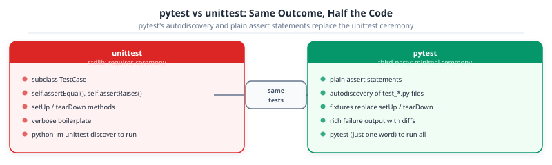
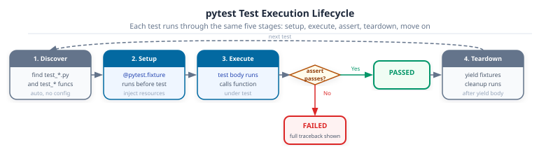
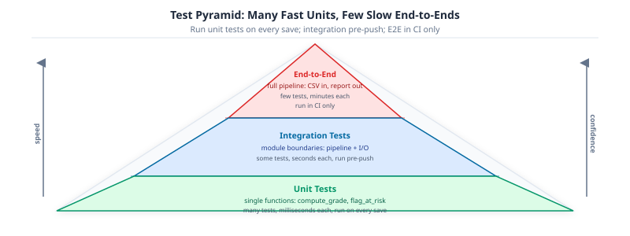

Chapter 23: Testing with pytest

A grade computation function passes every test you wrote by hand. It handles 100, 0, and typical values. Four months later, someone adds weighted rounding for borderline cases. One boundary changes: a student with a final score of exactly 59.5 gets a passing grade when they should not. The function looks correct. The existing tests still pass. No exception is raised. Wrong grades propagate for two weeks before a manual audit catches them.
The difference between that bug and a caught bug is one test: the 59.5 boundary. Tests are not documentation of how your code works. They are executable contracts: whatever else changes, these inputs must produce these outputs. Break the contract and the pipeline fails before the wrong answer reaches production.
Pytest is why you write that contract in three lines instead of twelve. No class inheritance, no setup method, no registration: a test is a function whose name starts with test_, and pytest finds it, runs it, and reports what broke. That is why DS teams use pytest instead of the standard-library unittest: less ceremony, more tests written.
Next: Chapter 24: Pre-commit automation runs these tests automatically on every commit.
0. What is pytest and why use it
Python ships with a built-in test runner called unittest. It works, but it forces you to subclass TestCase, call self.assertEqual(...) instead of assert, and write substantial boilerplate before a single assertion runs. pytest is the community standard for a reason: it discovers tests automatically, uses plain assert statements, and provides richer output with no extra effort.
That’s it. Less ceremony, same tests.

Install pytest and the two plugins you’ll use throughout this chapter:
uv add --dev pytest pytest-cov pytest-mockpytest-cov measures which lines of code are exercised. pytest-mock wraps unittest.mock.patch as a fixture so mocking reads more cleanly.
Verify the installation:
uv run pytest --version Key Concept: pytest discovers tests by naming convention
Name your files test_.py or _test.py, and prefix your test functions with test_. No registration, no base class, no import of pytest in the test file. pytest finds them automatically.
1. Why DS Code needs tests
A normalization function applied after the train/test split instead of before. A fillna(0) that should have been fillna(df["score"].mean()). A boolean column that silently became an integer. These bugs don’t raise exceptions; they produce wrong outputs quietly.
Silent bugs are the hard ones. A test suite converts “I think this is right” into “this is verifiably correct, and stays correct when the code changes.”

Here is the simplest possible test for compute_grade:
# tests/test_core.py
from grade_predictor.core import compute_grade
def test_compute_grade_defaults():
result = compute_grade(midterm=80.0, final=85.0, project=90.0)
assert abs(result - 84.25) < 0.01 # 0.30*80 + 0.45*85 + 0.25*90Run it:
uv run pytest tests/ -vThe -v flag shows each test name and its pass/fail status. Without it, pytest shows only a dot per passing test. A handful of flags cover most of what you need day-to-day:
| Flag | What it does |
|---|---|
-v |
Verbose: show each test name |
-x |
Stop on first failure |
-k "grade" |
Run only tests whose name contains “grade” |
--tb=short |
Shorter traceback: location and assertion only, no full stack |
-q |
Quiet: one character per test, good for large suites |
--last-failed |
Re-run only the tests that failed in the previous run |
uv run pytest tests/ -x --tb=short # stop on first failure with compact output
uv run pytest tests/ -k "parametrize" # run tests matching a keyword Key Concept: A test is an executable specification
test_compute_grade_defaults says: given these inputs, this function must return this value. If the function ever changes and breaks this, the test fails immediately. A failing test isn’t a problem: it’s useful information. A passing test on wrong code is the actual problem.
2. Parametrize: one test, many inputs
Writing one test function per boundary case produces a lot of duplicated code. @pytest.mark.parametrize runs the same test body once per row in a table of inputs: adding a new edge case is one extra row, not a new function.
Grade boundaries in grade-predictor:
import pytest
from grade_predictor.core import grade_to_letter
@pytest.mark.parametrize("midterm,final,project,expected", [
(90.0, 92.0, 88.0, "A"), # composite >= 85
(75.0, 78.0, 80.0, "B"), # composite >= 70
(55.0, 60.0, 58.0, "C"), # composite >= 55
(40.0, 42.0, 45.0, "D"), # composite >= 45
(20.0, 25.0, 30.0, "F"), # composite < 45
])
def test_grade_letter_boundaries(midterm, final, project, expected):
assert grade_to_letter(midterm, final, project) == expectedEach row becomes a separate test case in the output:
tests/test_core.py::test_grade_letter_boundaries[90.0-92.0-88.0-A] PASSED
tests/test_core.py::test_grade_letter_boundaries[75.0-78.0-80.0-B] PASSED
...The bracket notation in the output shows the exact inputs that produced the failure, which makes diagnosis fast.
Goal: Write a
normalize_score(raw, min_val, max_val) function in core.py that maps a raw score to the 0-100 range. Write a parametrized test covering: raw equals min_val returns 0, raw equals max_val returns 100, and one midpoint. Confirm all three cases pass.
@pytest.mark.parametrize("raw,min_val,max_val,expected", [
(0.0, 0.0, 100.0, 0.0), # raw == min
(100.0, 0.0, 100.0, 100.0),
(50.0, 0.0, 100.0, 50.0),
])
def test_normalize_score(raw, min_val, max_val, expected): ...
3. Fixtures for reusable test data
A fixture is a function that provides a value to a test. Any test that declares the fixture’s name as a parameter receives it automatically. Fixtures live in conftest.py so they’re shared across all test files.
# tests/conftest.py
import pandas as pd
import pytest
@pytest.fixture
def sample_df() -> pd.DataFrame:
return pd.DataFrame({
"student_id": ["S0001", "S0002", "S0003"],
"midterm_score": [80.0, None, 60.0],
"final_score": [85.0, 70.0, 55.0],
"project_score": [90.0, 75.0, 65.0],
"program": ["CS", "DS", "IT"],
"passed": [True, True, False],
})Use it in any test file:
def test_flag_at_risk(sample_df):
from grade_predictor.core import flag_at_risk
result = flag_at_risk(sample_df, threshold=65.0)
assert result.sum() == 1 # only S0003 is at riskFixture scope controls how often the fixture runs:
| Scope | Created | Right for |
|---|---|---|
function (default) |
Before each test | Small synthetic DataFrames |
module |
Once per file | Medium-sized fixtures |
session |
Once per pytest run | Loading a large CSV from disk |
For a fixture that loads university_analytics.csv, use session scope. Reading 2,400 rows once per run is fast enough; reading it 40 times (once per test) adds up quickly.
@pytest.fixture(scope="session")
def university_df() -> pd.DataFrame:
return pd.read_csv("data/university_analytics.csv")Goal: Write a session-scoped fixture in
conftest.py that loads a 50-row sample from university_analytics.csv (use .head(50)). Write three tests that each use this fixture: one that checks column names, one that checks there are no null values in student_id, and one that confirms passed is boolean.
@pytest.fixture(scope="session")
def small_df():
return pd.read_csv("data/university_analytics.csv").head(50)
4. Testing pandas transforms
Three patterns cover almost every DataFrame test in DS code.
Pattern 1: Shape and column presence
def test_add_average_marks_adds_column(sample_df):
from grade_predictor.core import add_average_marks
result = add_average_marks(sample_df)
assert "average_marks" in result.columns
assert result.shape == (3, 7) # original 6 columns + 1 newPattern 2: pd.testing.assert_frame_equal
def test_filter_passing_students(sample_df):
from grade_predictor.core import filter_passing
result = filter_passing(sample_df)
expected = sample_df.iloc[[0, 1]].reset_index(drop=True)
pd.testing.assert_frame_equal(result, expected, check_like=True)check_like=True ignores column and row order. When testing a filter, that’s usually what you want: the data should match, but the order doesn’t have to.
Pattern 3: dtype and schema assertions
def test_output_dtypes(sample_df):
from grade_predictor.core import add_average_marks
result = add_average_marks(sample_df)
assert result["average_marks"].dtype == "float64"
assert result["passed"].dtype == "bool"Pattern 4: pytest.approx for scalar float comparisons
When testing a single computed value rather than a full DataFrame, use pytest.approx instead of ==. It handles floating-point rounding automatically:
import pytest
from grade_predictor.core import compute_grade
def test_compute_grade_weighted():
# 0.30*80 + 0.45*85 + 0.25*90 = 84.25
result = compute_grade(midterm=80.0, final=85.0, project=90.0)
assert result == pytest.approx(84.25, rel=1e-4)pytest.approx also works on lists and dicts of floats: assert [0.1 + 0.2, 0.3] == pytest.approx([0.3, 0.3]).
Together these four patterns test the shape, the values, the types, and numeric precision. A transform that passes all four is well-specified.
Common Mistake: assert df1.equals(df2) for floats
DataFrame.equals uses exact equality, and floating-point arithmetic means 0.30 * 80 + 0.45 * 85 + 0.25 * 90 may not equal 84.25 to the last bit on all platforms. Your test passes on your machine and fails in CI. Use pd.testing.assert_frame_equal instead: it has check_exact=False and rtol/atol parameters for numeric tolerance.
Goal: Write an
add_average_marks(df) function in core.py that adds a column average_marks = (midterm + final + project) / 3. Write three tests: shape assertion, assert_frame_equal on a manually computed expected DataFrame, and a dtype check. All three should pass.
import pandas as pd
def test_add_average_marks_shape(sample_df):
result = add_average_marks(sample_df)
assert result.shape == (3, 7)
5. Testing exception handling
A function that raises a clear exception on bad input is better than one that silently returns a wrong answer. Test the exception:
def test_invalid_weights_raises():
with pytest.raises(ValueError, match="weights must sum to 1"):
compute_grade(80.0, 85.0, 90.0, weights=(0.5, 0.5, 0.5))The match argument checks that the error message contains the given string. Without it, the test passes for any ValueError, even one from an unrelated part of the code. With it, you’re confirming the right error from the right place with the right message.
# tests/test_core.py
@pytest.mark.parametrize("weights", [
(0.5, 0.5, 0.5), # sums to 1.5
(0.1, 0.1, 0.1), # sums to 0.3
(-0.3, 0.8, 0.5), # negative weight
])
def test_invalid_weights_all_raise(weights):
with pytest.raises(ValueError):
compute_grade(80.0, 85.0, 90.0, weights=weights) Activity 4: test an Exception
Goal: Add a ValueError to compute_grade when any weight is negative or the weights do not sum to approximately 1.0 (within 0.001). Write a parametrized test that covers three invalid cases. Confirm all three raise ValueError and that a valid call still passes.
6. Coverage
Coverage measures which lines of code are executed during the test suite. Lines that are never executed are either dead code or untested paths: and you want to know which.
uv run pytest tests/ --cov=grade_predictor --cov-report=term-missingThe term-missing report shows which specific lines aren’t covered. A line number in the “missing” column means no test exercises that path.
Enforce a minimum threshold in pyproject.toml:
[tool.pytest.ini_options]
testpaths = ["tests"]
addopts = "--cov=grade_predictor --cov-report=term-missing --cov-fail-under=80"With --cov-fail-under=80, pytest exits with a non-zero code if coverage drops below 80%. CI catches this automatically.
The right target for DS library code is 80% to 85%. 100% is often counterproductive: it forces testing trivial property accessors and error messages that add no value. What matters is covering every code path that can produce a wrong answer silently.
Pro Tip: Focus coverage on the paths that matter
A missing line on a trivial return self._name property isn’t worth a test. A missing line on the normalization branch of a preprocessing function is. Read the “missing” column as a checklist of untested logic paths, not a number to maximize for its own sake.
7. Organizing a DS test suite
The standard structure for a DS project follows the test pyramid: many fast unit tests at the base, fewer integration tests in the middle, a small number of end-to-end tests at the top.

tests/
├── conftest.py # shared fixtures: sample_df, university_df
├── unit/
│ ├── test_core.py # individual function tests
│ └── test_config.py # settings and environment variable loading
└── integration/
└── test_pipeline.py # end-to-end: load CSV, transform, compute gradesUnit tests test one function in isolation with synthetic data. They run in milliseconds and should always run. Integration tests test the full pipeline with real data from disk: they run in seconds and belong in CI and pre-release checks.
Run only unit tests locally during development, all tests in CI:
uv run pytest tests/unit/ -v # fast, local
uv run pytest tests/ -v --override-ini=addopts= # full suite, CI8. Mocking external dependencies
Some code can’t be tested with real data: a function that calls an API, reads from a database, or writes to a file. Mocking replaces that dependency with a controlled substitute for the duration of the test.
unittest.mock.patch is the standard tool. It temporarily replaces an object at a given import path with a MagicMock that you control:
# grade_predictor/io.py
import requests
def fetch_course_list(api_url: str) -> list[dict]:
"""Fetch the current course list from the university API."""
response = requests.get(api_url)
response.raise_for_status()
return response.json()Testing this without hitting the network:
# tests/unit/test_io.py
from unittest.mock import patch, MagicMock
from grade_predictor.io import fetch_course_list
def test_fetch_course_list_returns_parsed_json():
mock_response = MagicMock()
mock_response.json.return_value = [{"course_id": "C01", "name": "Stats"}]
mock_response.raise_for_status.return_value = None
with patch("grade_predictor.io.requests.get", return_value=mock_response) as mock_get:
result = fetch_course_list("https://api.example.com/courses")
mock_get.assert_called_once_with("https://api.example.com/courses")
assert result == [{"course_id": "C01", "name": "Stats"}] Key Concept: Patch at the import location, not the definition location
Patching requests.get won’t work because fetch_course_list already holds a reference to the original. You have to patch “grade_predictor.io.requests.get”: the name as it appears inside the module under test. This is the single most common mock mistake.
For pandas-based code, mock the file read so tests don’t depend on a real CSV being present:
from unittest.mock import patch
import pandas as pd
def test_load_students_returns_dataframe():
fake_csv = pd.DataFrame({
"student_id": ["S0001", "S0002"],
"final_score": [85.0, 72.0],
})
with patch("grade_predictor.io.pd.read_csv", return_value=fake_csv):
from grade_predictor.io import load_students
result = load_students("any/path.csv")
assert len(result) == 2
assert "final_score" in result.columnspytest-mock wraps the same pattern slightly cleaner as a fixture:
# pyproject.toml
[project.optional-dependencies]
test = ["pytest", "pytest-cov", "pytest-mock"]# Same test with pytest-mock's mocker fixture
def test_fetch_course_list_with_mocker(mocker):
mock_get = mocker.patch("grade_predictor.io.requests.get")
mock_get.return_value.json.return_value = [{"course_id": "C01"}]
mock_get.return_value.raise_for_status.return_value = None
result = fetch_course_list("https://api.example.com/courses")
assert result[0]["course_id"] == "C01" Common Mistake: Over-mocking
If a test mocks every function the code under test calls, it’s no longer testing the code: it’s testing the mock. A unit test should run the real logic and mock only the I/O boundary: network calls, file reads, database queries. A function that computes a grade from numbers doesn’t need any mocking. Mock the API; run the computation logic for real.
Goal: Write a
load_grades(path: str) -> pd.DataFrame function in grade_predictor/io.py that calls pd.read_csv(path). Write a test that mocks pd.read_csv to return a two-row DataFrame, calls load_grades(“any/path.csv”), and asserts the result has two rows without reading a real file.
from unittest.mock import patch
import pandas as pd
def test_load_grades_mocked():
fake_df = pd.DataFrame({"student_id": ["S0001", "S0002"], "score": [80.0, 70.0]})
with patch("grade_predictor.io.pd.read_csv", return_value=fake_df):
result = load_grades("any/path.csv")
assert len(result) == 2
9. Modern built-in fixtures
pytest ships three fixtures that cover a large class of I/O and environment problems without any extra package: and they don’t need to be imported.
tmp_path: isolated temporary directories
Any test that writes to disk should write to a directory that disappears after the test. tmp_path provides a pathlib.Path pointing to a unique directory created for each test:
def test_pipeline_writes_output(tmp_path):
from grade_predictor.pipeline import run_pipeline
output_file = tmp_path / "results.csv"
run_pipeline(output_path=output_file)
assert output_file.exists()
assert output_file.stat().st_size > 0No cleanup needed: pytest removes the directory after the test completes.
monkeypatch: patching environment variables and objects
monkeypatch is pytest’s built-in alternative to unittest.mock.patch for patching attributes, environment variables, and dictionary entries. Changes are automatically undone after each test:
def test_pipeline_config_from_env(monkeypatch):
monkeypatch.setenv("MODEL_THRESHOLD", "0.75")
monkeypatch.setenv("DATA_PATH", "tests/fixtures/sample.csv")
from grade_predictor.config import PipelineConfig
cfg = PipelineConfig()
assert cfg.model_threshold == 0.75Use monkeypatch.setattr to patch any object attribute: monkeypatch.setattr(module, "function_name", mock_fn): and the original is restored when the test exits.
capfd: capturing stdout and stderr
capfd captures file-descriptor-level output, including output from C extensions and subprocesses: useful when the code you’re testing prints rather than returns:
def test_report_prints_summary(capfd):
from grade_predictor.report import print_summary
print_summary(pass_rate=0.82, total=120)
out, err = capfd.readouterr()
assert "82%" in out
assert err == "" Pro Tip: Run tests in parallel with pytest-xdist
Install pytest-xdist and run with -n auto to distribute tests across all CPU cores. A suite that takes 45 seconds single-threaded often runs in 12 seconds with -n auto. The only requirement is that tests must not share mutable global state.
uv add –dev pytest-xdist
uv run pytest tests/ -n auto
Activity 6: built-in Fixtures
Goal: Write three tests, one per fixture. (1) Use tmp_path to write a small CSV with pd.DataFrame.to_csv and assert the file exists. (2) Use monkeypatch.setenv to set MODEL_THRESHOLD=0.9 and assert your PipelineConfig reads it correctly. (3) Use capfd to capture the output of a function that prints a summary line and assert the expected string appears in out.
Capstone - A Working Test Suite
Write a complete test suite for grade-predictor.
Write a test suite that achieves 80% coverage. It must include:
- One parametrized test covering all five grade letter boundaries
-
A session-scoped fixture that loads a sample from
university_analytics.csv -
One
assert_frame_equaltest on a DataFrame transform -
One
pytest.raisestest oncompute_gradewith invalid weights -
Coverage configured in
pyproject.tomlwith–cov-fail-under=80
uv run pytest tests/ --cov=grade_predictor --cov-report=term-missing
Next: Chapter 24: Automation with pre-commit: every check from Parts 14-17, running automatically without having to remember to.